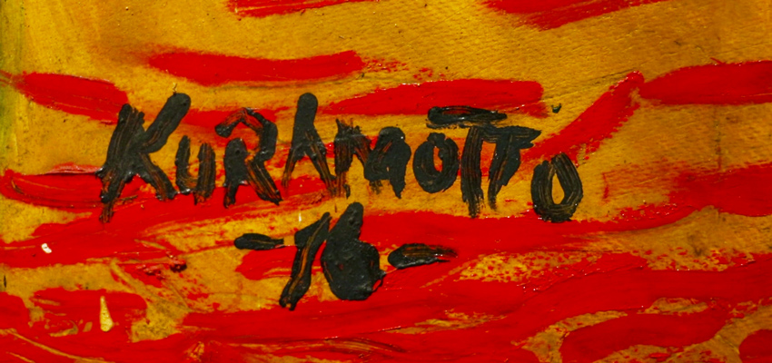

Tito Kuramotto, una de las grandes figuras representativas del arte en el Oriente boliviano, con más de 60 años de carrera como artista, expone sus obras retomando la costumbre que siempre tuvo de pintar la naturaleza. “Un cálido abrazo eterno, termina quemándonos” es una de las muchas frases que podemos leer en su exposición. Las célebres obras de Kuramotto se encuentran en la “Manzana 1” para el goce de todos y para aquel que desee deleitarse del arte cruceño.
Estéreotipados no desaprovechó la oportunidad de realizarle una entrevista a este genio del arte el día de la inauguración de su muestra. La compartimos a continuación:
TK: Es la técnica tradicional del óleo sobre tela, una técnica que se viene realizando desde el renacimiento año 1500.
En cuanto a la temática, yo al contrario de muchos artistas, el tema no me sale directamente, es algo que va naciendo a medida que voy trabajando, a veces el tema no se ve en el cuadro, yo lo tengo el tema en mi cabeza pero muchas veces no es fácil de comprenderlo. Por eso es que agrego los haikus, esa poesía japonesa de 17 sílabas, con ello trato de explicar el tema para que puedan interpretar el cuadro.
Yo parto de la idea de que las artes plásticas no son arte de tema, las artes de tema son poesía, literatura, teatro. Las artes plásticas son de líneas, de colores y de formas, cosa que no se entiende actualmente porque lo han mezclado todo de tal manera que ya nadie sabe qué es lo que tiene que hacer cuando pinta.
TK: Bueno, hay un grupo de jóvenes que son el futuro del arte cruceño eso yo no lo veía hace mucho pero empezó a aparecer, hay otro grupo que son el de los flojos; de los que creen que las cosas aparecen así facilito, porque así se criaron, en una sociedad donde hay que apretar botoncitos nomás.
TK: El que va ser artista es artista y el que no lo va ser, no lo será nunca, lo motive o no lo motive, el que será artista arrasa con todo. Para ser artista hay que nacer artista. En realidad eso que hacemos en la carrera de arte es darle un tìtulo de licenciado pero ya el artista es artista cuando viene a inscribirse.
Nos relata una anécdota:
TK: Cuando en 1958 hicimos la primera exposición en los salones del CLub Social, estaban Armando Jordán, Jorge Rosas, Herminio Pedraza, y pusimos un letrero para que la gente entre, ellos se asomaban y espiaban, no veían nada y se iban.
Esa era la respuesta del público, porque nadie les enseñó, y esto ha avanzado muchísimo tenemos la Manzana 1, que yo creo que es la mejor galería en bolivia, con la teperota queriendo caerse pero muy visitada.
Las artes plásticas son de líneas, de colores y de formas, cosa que no se entiende actualmente porque lo han mezclado todo de tal manera que ya nadie sabe qué es lo que tiene que hacer cuando pinta.
MÚSICA 0
TEATRO 1
Museo el Altillo Beni abrió sus puertas al público este 5 de noviembre
Publicado : 9/11/2018ENTREVISTAS MUSEOS CCFR LITERATURA TITO KURAMOTTO TEATRO DE LOS ANDES MUSEO DE ARTE CONTEMPORÁNEO CALENDARIECITO